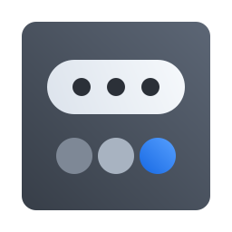

Extensões


- Ajustes rápidos no lugar de Quick Settings

Bandeja
1.6.0 · 533e6f8https://github.com/vitoriamariadb/meowsystem-status-hubcommit 533e6f826/10/2026Ajustes rápidos
0.1.0 · 73d29e9https://github.com/vitoriamariadb/meowsystem-quick-settingscommit 73d29e926/10/2026Modo de leitura
0.1.0 · 1b7f346https://github.com/vitoriamariadb/meowsystem-leituracommit 1b7f34626/10/2026Modo performance
0.1.0 · 990662dhttps://github.com/vitoriamariadb/meowsystem-performancecommit 990662d26/10/2026Registro
cargo build --release --locked error: failed to download `cosmic-config` sem rede
Nenhuma extensão no catálogo
Ponte foraO compositor não instala
Builds
- Compositorcosmic-comp 0.1~1792508925~24.04~8cb18025 remendos · feitos para 4d14528 PendenteCompilandoFalhouSem ponte
- Menu do Arquivoscosmic-files 1.11.0~1792510858~24.04~3cc4b80papel de parede no menu · 25/10/2026 Em dia
- Tocando agora0.3.0 · 11a2729 · fora do computadorNão instalada
- Bandeja1.6.0 · 533e6f8 · ~/.localEm dia
- Ajustes rápidos0.1.0 · 73d29e9 · ~/.localEm dia
- Modo de leitura0.1.0 · 1b7f346 · ~/.localEm dia
- Modo performance0.1.0 · 990662d · ~/.localEm dia
Registro
compositor · cosmic-comp 8cb1802 sem-workspace-vazio.patch ok raio-clampado.patch ok menu-clique-curto.patch aplicando modo-leitura.patch não encaixa em 8cb1802
Remendos do compositor
Sem workspace vazioRaio no limiteClique curto no menuModo de leituraCache do desfoque
- Refazer ao entrar na sessão